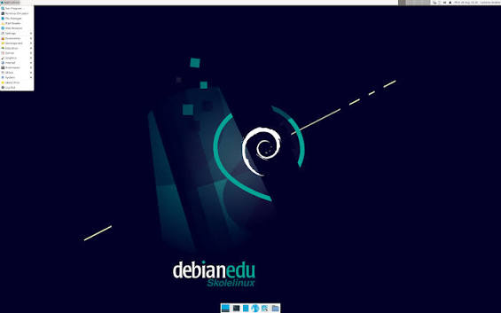

Debian is one of the oldest, most stable, and highly influential open-source operating systems based on the Linux kernel. Unlike many other distributions, it is developed and maintained entirely by an independent, global community of volunteers rather than a commercial company, adhering strictly to the principles of free software. Renowned for its phenomenal reliability and rock-solid security, Debian is a preferred choice for critical enterprise servers and network infrastructure worldwide. Furthermore, its versatile architecture and powerful package management system (apt) have made it the foundational "parent" for hundreds of other popular Linux distributions, including Ubuntu, Linux Mint, and Kali Linux. The name itself is a portmanteau of its late creator, Ian Murdock, and his then-wife, Debra.
Follow